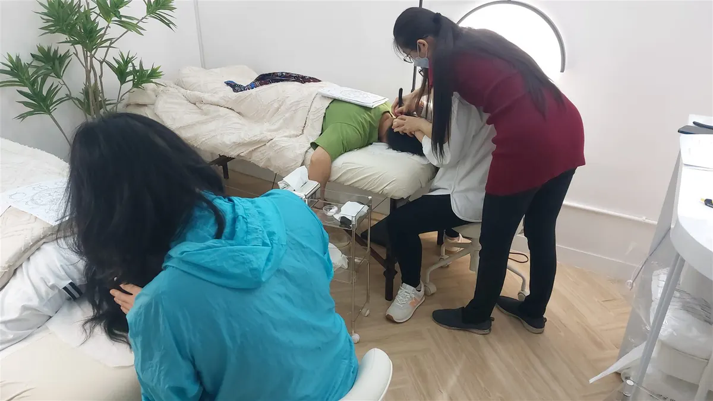

The Bojin Journal · Brows & Forehead
"Natural alternatives to Botox" for your forehead: an honest look

Nothing you do with your hands at home is Botox, and it would be unfair to tell you otherwise. Bojin can't relax a muscle the way an injection does, and it can't fill a line. What it can do is soften the tension you hold across your forehead, support circulation, and help that area look more rested, with no needles, no downtime, and no cost. If you've been searching for a gentler route, you deserve a fair comparison, not a sales pitch.
Why does my forehead look so tense and lined?
Your forehead is one of the busiest parts of your face. You raise your brows to see, to focus, to react. Hundreds of times a day, often without noticing. Over the years that steady movement, plus the way many of us hold worry right there, keeps the area tight. By evening it can feel almost braced.
On top of that, forehead skin sits over muscle you're always using, so held tension shows up quickly as a drawn, weary look. Fluid can settle and make things look a little heavier, and circulation slows when you're tired or stressed. None of this is a flaw, and none of it is your fault. It's a hardworking part of your face asking for a moment of care.
This is also why a quick rub rarely changes much. The area doesn't need to be pushed harder; it needs to be worked with a little intention. If the lines themselves feel like they're getting deeper by the year rather than just tighter by the evening, I answer that question head-on in forehead lines getting deeper?
How the Bojin Method helps a tense forehead
First, what bojin is. If you already know gua sha, you have a head start: bojin grew from the same family of Chinese hands-on face care, so it will feel familiar. It's still its own, more deliberate method. What makes it work is three things: the order you work in, the angle you hold the tool, and the exact spot you're working, all at a pressure that's comfortable for you.
The traditional tool is a bojin stick: a slim, polished stainless steel tool shaped to follow the face, worked with its rounded edge. You can start with clean fingertips, or a smooth-edged tool you already own such as a gua sha stone, while you learn the moves, but the stick is what the method was built around. And a tool on its own usually comes with no method attached: no one shows you the order to follow, the angle to hold, or where exactly to work. Add that method, and the same few minutes feel different.
So where does this leave the Botox comparison? They're different choices. An injection, placed by a board-certified professional, relaxes muscle and can soften a set line. Bojin is gentle self-care: it eases held tension and helps you look more rested. Many women use one, the other, or neither. The honest point is that they aren't the same thing, and bojin was never meant to replace a needle.
On your forehead, it isn't about pressing harder or barely touching. It's the right, comfortable pressure: firm enough to feel, never enough to hurt or drag the skin, held at the right angle and worked in the right order and place. That order, angle, and placement is the method.

The 5-minute forehead reset
Use your bojin stick or clean fingertips, and add a little oil or cream first so nothing drags. Work in order, follow the angle described, and use the right comfortable pressure: not featherlight, not forceful. This is a calm ritual, so slow down and let the angle do the work.

Warm and settle
Rest your whole hand flat against your forehead for a few slow breaths. This calms the area and lets you notice where you're holding tension before you start.
Read your face first
Gently feel across the forehead and brows. Wherever it feels tightest or most drawn is where you'll spend a little more time. This sets the order you work in.
Ease the center
With the rounded edge of your bojin stick or a fingertip, work from between the brows slowly upward toward the hairline. Keep the angle low and even, and the pressure comfortable.
Open outward across the brow
Glide from the center of the forehead out toward each temple, following the natural line of the brow bone. Move slowly, letting the tension release rather than forcing it.
Finish down the sides of the neck
This is the step people skip. Sweep gently from behind the ears down the sides of the neck so settled fluid has somewhere to go. It's what makes the whole reset feel finished.
What can I expect?
Most women notice the everyday wins: the forehead feels looser, less braced, and looks a little brighter and more awake. Serums may sink in better afterward, and there's a real, quiet lift to seeing a calmer face in the mirror. Done regularly, a few minutes like this can become a soothing part of your day.
Now the honest limits. This won't remove lines, it won't relax a muscle, and it isn't a treatment for anything: the results are gentle and everyday, they fade rather than last, and they aren't the same as an injection. If you want a line softened at the source, that's a conversation for a board-certified professional. And if anything on your forehead appears suddenly, sits on only one side, or comes with pain or other worrying changes, please see your doctor rather than reaching for a tool.
You don't have to choose between doing nothing and booking a needle. A few honest minutes a day is a kind, low-stakes place to start.
Quick answers
Is bojin a real alternative to Botox for forehead lines?
It's a different choice, not a substitute. Botox relaxes muscle and can soften a set line; bojin eases held tension and helps the forehead look more rested. It won't do what an injection does, but it costs nothing, needs no downtime, and feels good, which is why many women try it first or use it alongside other care.
Can I use a gua sha stone, or do I need a bojin stick?
You can start with a gua sha stone or clean fingertips while you learn. A bojin stick is the traditional tool the method was built around, shaped to follow the face. But the real difference isn't the object in your hand: it's working in the right order, at the right angle and spot, with a comfortable pressure.
How often should I do the forehead reset?
Most women do well with a few minutes most days. Consistency matters more than intensity, so a calm, regular five minutes will serve you far better than pressing hard now and then. Let it be something you look forward to, not a chore.
Will this get rid of my forehead wrinkles?
No, and I won't pretend otherwise. It won't erase lines or reverse aging. What it can do is soften tension and help the area look brighter and more rested. For changing a line at its source, talk with a board-certified professional about your options.
See the order, angle, and spot for yourself
Watch the free 3-minute forehead video, where I walk you through the exact order to follow, the angle to hold, and where to work, so you can feel the right, comfortable pressure and try the reset with confidence.
Watch the free 3-min videoYu-Ting Lan is a Taiwan-based international bojin instructor and the founder of Héhé Studio. She has taught her bojin method to more than a thousand students, from complete beginners to grandmothers, across Taiwan, Hong Kong, and Malaysia.